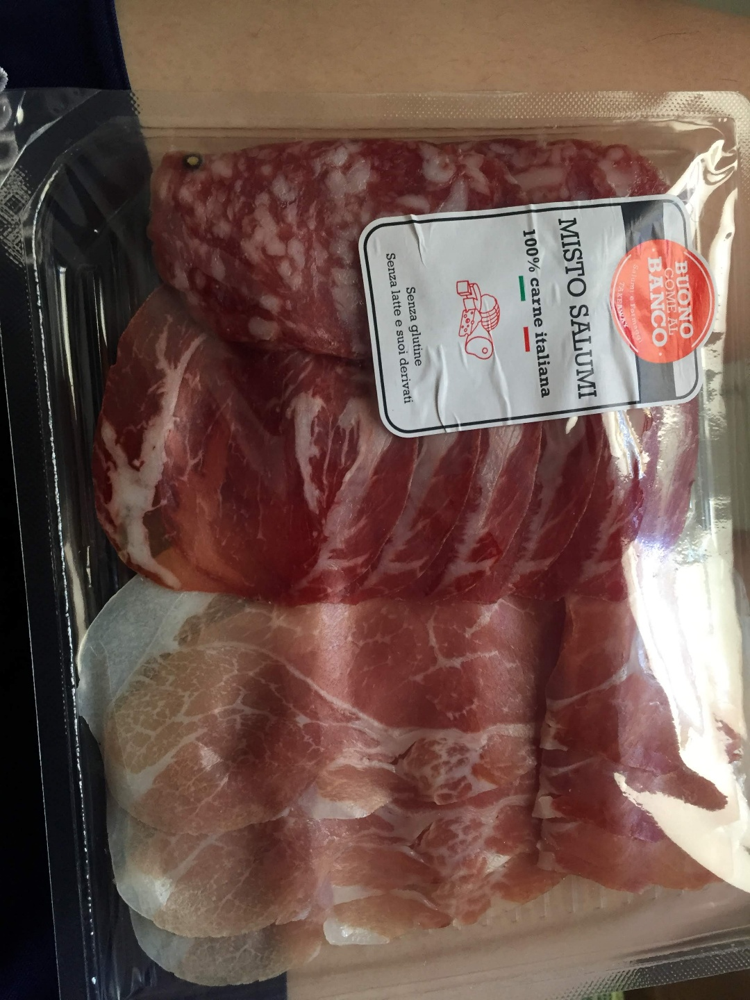
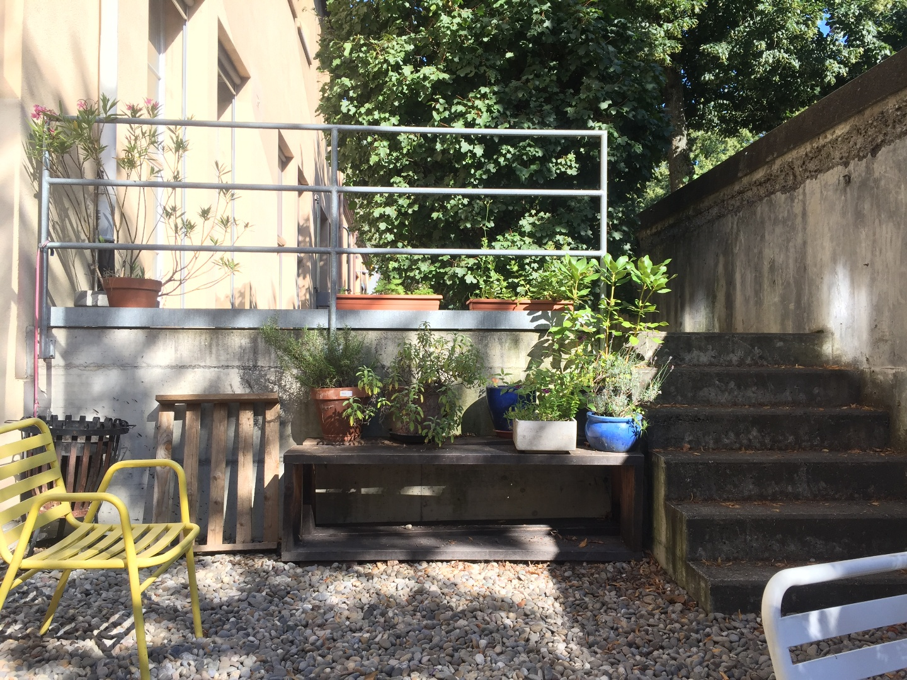

Wooseok's Travel Diary - Western Europe (ITA, CHE, FRA)
Italia
2019. 6. 29 ~ 7.1 - 베네치아
베네치아(이탈리아어: Venezia, 베네토어: Venesia, Venexia, 영어: Venice, 독일어: Venedig,
문화어: 베네찌아)는 이탈리아 북부에 위치한 베네토주 베네치아 광역시에 속하는 도시로, 베네토 주의 주도(州都)이다.
과거 베네치아 공화국의 수도였다. 또한 세계적 관광지이며, 수상 도시이자 운하의 도시로도 유명하다.

2019. 7. 1 ~ 5 - 로마
로마(이탈리아어: Roma)는 이탈리아의 수도이자 최대 도시로, 라치오주의 주도이며, 테베레 강 연안에 있다.
로마시의 행정구역 면적은 1,285.31 km2이고 대도시현의 인구는 400만이 넘지만 밀라노나 나폴리 대도시현에 비해
면적이 3~4배 넓은 편이고 되려 로마시의 면적과 밀라노와 나폴리의 대도시현의 면적이 비슷하므로 세 도시 모두
300만 정도로 비슷한 규모의 도시라 볼 수 있다.
2019. 7. 5 ~ 8 - 피렌체
피렌체(이탈리아어: Firenze, 영어: Florence)는 이탈리아 토스카나주의 주도이다.
피렌체현의 현청 소재지이며, 인구는 38만명이고 근교의 인구까지 합치면 총 약 150만명이다.
토스카나 주에서 가장 인구가 많은 도시이기도 하다. 피렌체는 아르노 강변에 위치해 있으며 역사상 중세,
르네상스 시대에는 건축과 예술로 유명한 곳이었다. 중세 유럽의 무역과 금융의 중심지였으며 종종
이탈리아 르네상스의 본고장으로 불리기도 한다.
2019. 7. 8 ~ 9 - 친퀘테레
친퀘 테레 (Cinque Terre) ( 이탈리아어 발음 : [ ˌ tʃinkwe tɛr ː E] )는
이탈리아 리비에라에 있는 절벽과 바위로 이루어진 해안이다. 그것은 이탈리아 라스페치아(La Spezia)의
서쪽에 있는 리구리아 지역에 위치하며, 친퀘 테레(Cinque Terre)를 이루는 "다섯 개의 땅”은
몬테로소알마레(Monterosso al Mare), 베르나차(Vernazza), 코르닐리아(Corniglia),
마나롤라(Manarola), 리오마조레(Riomaggiore), 이상 5개의 마을이 해당된다. 다섯 마을과 주변 언덕,
해변은 전부 친퀘 테레 국립공원의 일부이며 유네스코 세계 문화 유산이다.
2019. 7. 9 ~ 10 - 밀라노
밀라노(이탈리아어: Milano, 롬바르드어: Milan, 독일어: Mailand, 라틴어: Mediolanum)는
이탈리아의 북부에 있는 도시로, 롬바르디아주의 주도이다. 밀라노는 이탈리아 북부의 최대 도시로,
롬바르디아 평원에 위치하고 있으며, 포 강이 이 도시를 흐르고 있다. 인구는 2009년 현재 130만 명이며,
광역 도시권 내에 337만 명이 거주한다.
Swiss
2019. 7. 10 ~ 12 - 취리히
취리히(독일어: Zürich 이 소리의 정보독일어 발음 (도움말·정보), 프랑스어: Zurich 쥐리크[*],
이탈리아어: Zurigo 추리고[*], 로만슈어: Turitg 투리치, 영어: Zurich)는 스위스에서 가장 큰 도시이자
취리히주의 주도이며, 스위스의 중간 지역에 취리히 호의 북쪽 끝에 위치해 있다. 취리히와 그 근처 지역을 말하는
취리히 수도권에는 약 200만명의 주민이 살고 있을 정도로 인구가 많다. 또한 취리히는 스위스의 주요 상업적 문화적
중심지이자 때때로 스위스의 문화수도로 불린다.
2019. 7. 12 ~ 14 - 루체른
루체른(독일어: Luzern, 프랑스어: Lucerne 뤼세른[*])은 스위스 중부 루체른주에 있는 도시이다.
루체른 주의 주도이다. 루체른 호의 서안에 면하며, 로이스 강이 시내를 흐른다. 8세기에 수도원과 대성당이 건립되었고,
알프스 산맥을 넘는 교통로의 요지로 발달하였다. 스위스 가입 후 가톨릭 중심지였으며,
1873년까지 교황대사가 이 도시에 주재하였다.
2019. 7. 14 ~ 16 - 인터라켄
인터라켄(독일어: Interlaken)은 스위스 베른주에 위치한 도시로, 면적은 4.3km2, 높이는 568m,
인구는 5,429명(2010년 기준), 인구 밀도는 1,234명/km2이다. 도시 이름은 독일어로 "호수(laken) 사이(Inter)"를
뜻한다. 동쪽에 있는 브리엔츠호와 서쪽에 있는 툰호 사이에 위치한 도시이며 시내에는 아레강이 흐른다. 진짜 장관이다.
융프라우산 등산의 거점이기 때문에 많은 관광객들이 몰린다. 융프라우산에는 인터라켄 동역을 거쳐 올라간다.
2019. 7. 16 ~ 17 - 바젤
바젤(독일어: Basel ['ba:zəl], 프랑스어: Bâle 발[*] [bɑl], 이탈리아어: Basilea 바실레아[*]
[bazi'leːa])은 스위스에서 세 번째로 인구가 많은 도시(2013년: 172,091 명)로 바젤슈타트주에 속한다.
인접 도시권을 포함하면 약 69만 명으로 스위스에서 두 번째로 크다. 스위스의 북서쪽 라인 강변에 자리하고 있으며,
화학과 제약 산업의 중심 도시 역할을 하고 있다. 도시는 독일과 프랑스의 국경과 접해 있다.
바젤 지역은 독일의 바덴과 프랑스의 알자스와 문화적으로 깊은 연관이 있다. 바젤 대학교는 스위스에서 가장 오래된 대학교이다.

France
2019. 7. 17 ~ 18 - 콜마르
콜마르(프랑스어: Colmar, 독일어: Kolmar, 알자스어: Colmer)는 프랑스 북동부 알자스 지역에서
세 번째로 큰 도시이다. 오랭주와 콜마르-리보빌레 아롱디스망 구역에 속한다.
알자스 포도주 루트에 놓여있어 "알자스 포도주의 중심지" (capitale des vins d'Alsace)로 여겨진다.
2019. 7. 18 ~ 20 - 스트라스부르
스트라스부르(프랑스어: Strasbourg, 독일어: Straßburg 슈트라스부르크[*], 알자스어: Strossburi)는
프랑스 북동부에 있는 도시로서 라인 강의 서쪽 강변에 있는 도시이다. 알자스(Alsace) 레지옹 청사 소재지임과 동시에
바랭주(Bas-Rhin) 정부 청사 소재지이다. 또한 스트라스부르는 유럽의 수도라는 이름을 지니고 있다.
프랑스에서 일곱 번째로 많은 사람들이 사는 도시인 스트라스부르는 또한 북동쪽의 중요한 경제의 축 중의 하나이다.
2019. 7. 20 ~ 26 - 파리
파리(프랑스어: Paris)는 프랑스의 수도로, 프랑스 북부 일드프랑스 지방의 중앙에 있다. 센 강 중류에 있으며,
면적은 105 km2. 인구는 2010년 기준으로 224만 명이다. 파리의 행정 구역은 1~20구로 나뉘어 있다.
센 강을 기준으로 우안(rive droite)과 좌안(rive gauche)으로 나뉜다. 우안은 전통적으로 정치,
경제 기능이 집중된 곳으로 정부 기관, 사무실, 백화점, 주요 기차역 등이 집중해 있다.
반면 좌안은 교육 기능을 중심으로 발전해왔다. 좌안의 라틴 지구에는 소르본을 비롯한 대학 및 그랑제콜,
연구소 등이 집중해 있다.
2019. 7. 26 ~ 27 - 몽생미쉘
몽생미셸(프랑스어: Mont-Saint-Michel), 발음: [mɔ̃ sɛ̃ mi.ʃɛl], "성 미셸의 산")은
북부 프랑스 노르망디 해안에 위치한 코뮌인 섬이다. 프랑스 북서부 해안에서 약 1km 떨어져 위치한다.
약 100헥타르의 크기에, 44명(2009년)이 거주한다. 이 섬은 고대(古代)로부터 전략적 중요성을 가지는
요새들을 가지고 있으며, 8세기 이후로 이 섬의 이름을 딴 수도원이 있다. 이 곳의 구조적 배치는 이것을 건설한
봉건사회를 잘 보여준다. 가장 꼭대기에 신이 있고, 그 아래 수도원, 그리고 큰 홀이 배치되고,
그 아래 상점과 주택이 배치되었다. 그리고 성벽 바깥 가장 아랫부분에는 농부와 어부들의 거처가 있다.
2019. 7. 27 ~ 30 - 니스
니스(프랑스어: Nice, 니사르드 오크어: Niça/Nissa, 이탈리아어: Nizza/Nizza Marittima,
그리스어: Νίκαια, 라틴어: Nicaea, 문화어: 나이스)는 프랑스 남부의 항만 도시로 프랑스의 지중해 연안에 위치해 있다.
마르세유와 제노바 사이에 위치해 있으며, 도시권 인구는 대략 100만명이다. 이 도시는 주요 관광 지역이며 프랑스 리비에라의 중심지다.
연평균 기온이 15℃이고 연중 온난하며 풍경이 아름다워 관광객이 많이 찾는다.
니스의 해안에는 7km 길이의 긴 산책로가 있는데 이를 프롬나드데장글레라고 부른다.
2019. 7. 30 ~ 31 - 마르세유
마르세유(프랑스어: Marseille, 오크어: Marselha)는 프랑스에서 두 번째로 큰 도시이다.
프로방스알프코트다쥐르 레지옹과 부슈뒤론주의 중심지이기도 하다. 지중해 연안의 항구도시로,
프랑스와 지중해 모두에서 가장 큰 항구이다.
2019. 7. 31 ~ 8.1 - 아를
아를(프랑스어: Arles)은 프랑스의 프로방스 지역에 있는 부슈뒤론주에 위치한 도시이자 코뮌이다.
고대 로마 시대에 번성하여 아를에 현재 보존되어 있는 고대 로마 유적은 1981년 유네스코 세계 문화 유산으로 등재되었다.
19세기에는 빈센트 반 고흐가 머물면서 300여 점의 작품을 그린 곳으로도 유명하다. 인구는 52,729명이며,
면적은 758.93km²로서 프랑스 본토의 코뮌들 중에서 가장 넓다.
 Wooseok's Travel Diary - Western Europe (ITA, CHE, FRA)
Wooseok's Travel Diary - Western Europe (ITA, CHE, FRA)